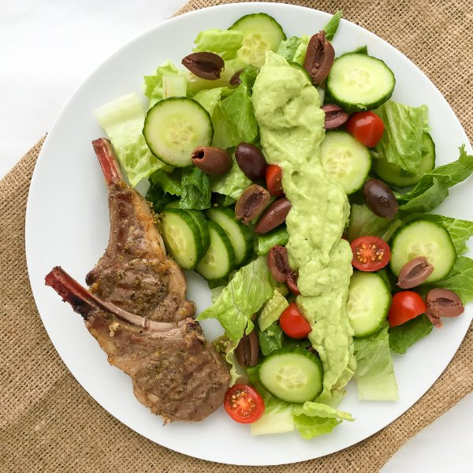

Pan-Seared Lamb Chops with Greek Salad & Avocado Dressing

Total Time
40 min
Nutrition (Per Serving)
725.7 kcalCalories
44.6 gProtein
18.6 gCarbs
55 gFat
Full nutrition table
| Calories | 725.7 kcal |
| Total fat | 55 g |
| Saturated fat | 20.4 g |
| Trans fat | 2.2 g |
| Cholesterol | 130.4 mg |
| Sodium | 442 mg |
| Carbohydrates | 18.6 g |
| Fiber | 8.8 g |
| Sugars | 5.7 g |
| Protein | 44.6 g |
| Potassium | 1290.4 mg |
| Calcium | 98.7 mg |
| Iron | 5.5 mg |
| Vitamin A | 780.3 IU |
| Vitamin C | 28.7 mg |
| Vitamin D | 0 IU |
Cookware
Ingredients
- 1avocado
- 1English cucumber
- 4 clovesgarlic
- 1 pintgrape tomatoes
- ½ cupKalamata olives, pitted
- 12lamb rib chops
- 1lemon
- 1 headromaine lettuce
- black pepper
- extra virgin olive oil
- oregano, dried
- salt
- virgin coconut oil
Steps
- Wash and dry the fresh produce.1 pint grape tomatoes
1 English cucumber
1 avocado
1 lemon
1 head romaine lettuce - Trim off and discard the root end of the lettuce and remove any blemished leaves; quarter the lettuce lengthwise, then chop crosswise into 1-inch pieces and transfer to a large salad bowl.
- Trim off and discard the ends of the cucumber; slice the cucumber crosswise into ⅛-inch-thick rounds and add to the salad bowl.
- Halve the tomatoes and add to the salad bowl.
- Halve the olives lengthwise and add to the salad bowl.½ cup Kalamata olives, pitted
- Preheat a skillet over medium heat.
- While the skillet heats up, trim off and discard the root ends of the garlic; peel and mince or press the garlic.4 cloves garlic
- Grate all of the zest from the lemon, then juice the lemon into a small bowl (that will be used for the salad dressing) and set aside.
- In a small bowl, combine and mix together ½ of the garlic (save the rest for the salad dressing), lemon zest, oregano, salt, and pepper.2 tsp dried oregano
1 tsp salt
½ tsp black pepper - Pat dry the lamb chops with paper towels and place on a plate; rub both sides of the chops with the spice mixture.12 lamb rib chops
- Once the skillet is hot, add coconut oil and swirl to coat the bottom.1 tbsp virgin coconut oil
- Place the lamb chops in the skillet; cook until they are nicely seared and cooked to your desired doneness, 3 to 4 minutes per side. Once done, transfer the chops to a plate and let them rest for 5 minutes.
- While the lamb chops cook, halve the avocado lengthwise and twist the halves to separate, then remove the pit with a knife or spoon; scoop out the flesh into the bowl with the lemon juice and mash with a fork until smooth.
- To make the dressing, add the remaining garlic, olive oil, salt, and pepper to the avocado and lemon mixture; mix together.2 tbsp extra virgin olive oil
½ tsp salt
¼ tsp black pepper - To serve, arrange the salad on a plate, spoon the avocado dressing overtop, and place the lamb chops on the side. Enjoy!